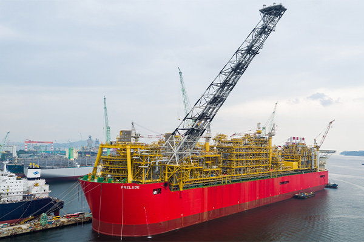
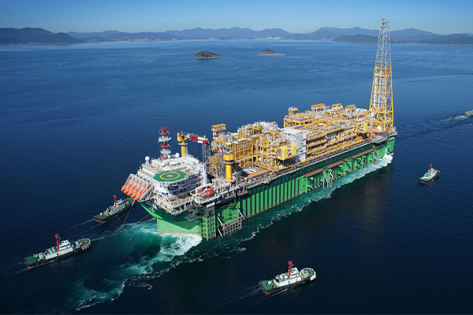
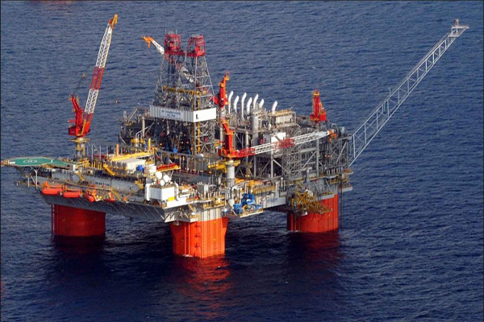
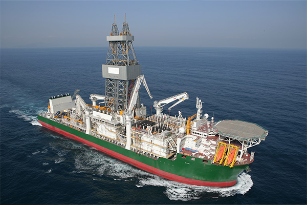
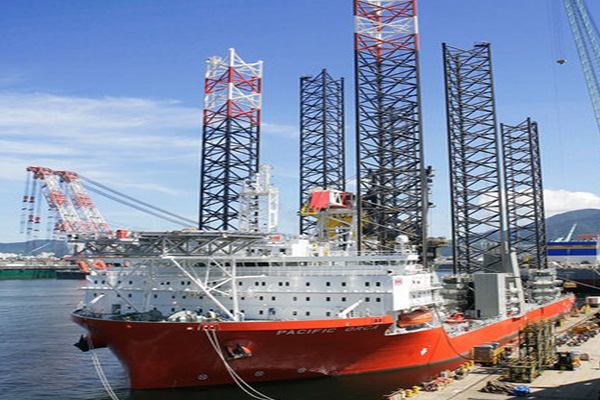

HOME > 기술/제품 > 해양사업
해양사업
“탄탄한 기술력과 축적된 경험으로 새로운 가치창조”
-

- FLNG
- FLNG(Floating LNG)는 해상에서 천연가스를 채굴한 뒤 이를 정제하고 LNG로 액화해 저장ㆍ하역할 수 있는 해양플랜트 설비입니다. FLNG를 이용해 해저 가스전을 개발할 경우 평균 2조원에 달하는 육상 액화ㆍ저장설비 건설이 필요 없으며, 해저 파이프를 설치하지 않기 때문에 해저 생태계도 보호할 수 있다는 장점이 있습니다. 삼성중공업은 세계 최초이자 최대 규모의 프릴루드(Prelude) FLNG를 2011년 약 3조원에 수주해 2017년 6월 성공적으로 인도하였습니다.
- FLNG로 해양플랜트 설비시장 선점
FLNG
-

- FPSO
- FPSO는 부유식 원유생산저장하역설비로서 심해 유전이나 유전의 조기 개발, 중소규모 유전 개발에 활용되는 고가의 해양설비입니다. FPSO는 독립된 한 개의 프로젝트가 아니라 수십억달러 규모의 유전개발 전체와 맞물려 있어 예기치 못한 사고나 차질이 발생하면 유전개발 자체가 중단될 수 있습니다. 따라서 경험에 의존해 답습하는 기술 수준으로는 엄청난 위험부담을 피할 수 없으며, 과학적인 검증을 통한 고도의 신뢰성과 안전성이 필요한 해양설비입니다.
- 세계 최다 FPSO 건조실적
FPSO
-

- 부유식 해양구조물
- 부유식 해양구조물은 심해 해상에 설치돼 해저 유전의 시추와 생산 작업에 투입되는 설비입니다. 삼성중공업은 세계 최초 FLNG 개발에 이어 세계 최대 규모의 CPF 수주로 해양구조물의 역사를 새로이 쓰고 있습니다. 삼성중공업이 일본계 호주 자원개발 업체인 인펙스(Inpex)社로부터 수주해 2017년 인도한 CPF(Central Processing Facility)는 유전에서 가스를 생산·처리하는 부유식 해양생산 설비입니다.
- 고부가가치의 해양구조물 생산으로 기술력 축적
FPU
-

- 드릴십
- 드릴십은 심해지역이나 파도가 심한 해상에서 원유를 발굴하는 시추설비로 고도의 선박건조기술과 해저시추 기술이 필요한 고부가가치선입니다. 삼성중공업은 1998년 국내 조선업계 최초로 드릴십을 건조한 바 있으며, 이후 축적된 기술과 건조경험을 바탕으로 2012년 3월 스웨덴 스테나 (Stena)社에 인도한 스테나 아이스막스(Stena Icemax)호는 극지방에서 시추작업을 수행할 수 있는 세계 최초의 극지용 드릴십입니다.
- 드릴십 세계 시장점유율 1위
Drillship
-

- 풍력발전기 설치선
- 삼성중공업은 12년 7월 인도한 스와이어(Swire)社 풍력발전기 설치선은 3.6MW급 풍력 발전기 12기를 동시에 운반·설치할 수 있으며, 초속 20m의 바람과 2.5미터의 파도가 치는 열악한 해상환경에서도 최대 36시간마다 풍력 발전기 1기씩 설치할 수 있도록 제작됐습니다. 이 선박은 선체에 장착된 6개의 기둥을 해저면에 내려 배를 공중에 10미터 가량 띄운 상태로 고정하여 작업함으로써 파도와 바람의 영향을 최소화하고, 설치의 정확성과 신속성을 기할 수 있습니다.
- 세계 최대 풍력설치선 건조
WTIV